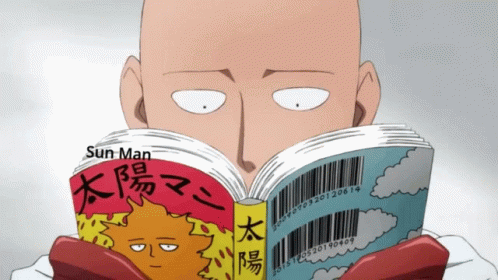

Présentation de mangas et anime
Premièrement, un anime/animé (également appelé japanime ou japanimation) est une série ou un film de dessins animés d’origine japonaise ayant comme public principalement les adultes et enfants. Ce terme est dérivé d’animēshon en japonais (dessin animé) et d’animation en anglais. Ces animations peuvent être dessinées à la main ou faites à l’ordinateur. Un anime est très souvent inspiré d’un manga ou d’un «Light Novel», par contre, à quelques occasions, il peut être basé sur un jeu vidéo. En effet, le concept est similaire aux films hollywoodiens, souvent le film est une adaptation d’un livre et non l’inverse.

Tout comme son ami le manga, l’anime détient un grand public principalement au Japon. Les premières animations connues datent de 1917, mais se n’est qu’en 1960 que l’anime moderne se développe et traverse les frontières du Japon durant les années 1970 à 1980. Plusieurs animes sont disponibles en dehors du Japon sur des sites de diffuseurs ou des chaînes spécialisées. Par exemple, Crunchyroll, Funimation, Télétoon et Cartoon Network. Par contre, il est commun de retrouver seulement les plus populaires ou les plus susceptibles de plaire au public. Avec l’immense nombre d’anime qui sort au Japon par année, il serait impossible de tous les diffuser et traduire.
Deuxièmement, un manga (signifiant « dessin dérisoire ») est une bande dessinée (au sens large) ou un roman graphique créé au Japon ou écrit en japonais. Cet immense phénomène de la culture japonaise moderne est produit selon un style développé au Japon à la fin du 19e siècle. Originalement, le manga a vu le jour entre 710 et 794 (période de Nara) grâce aux emakimonos. Ceux-ci sont des immenses rouleaux de papiers mesurant plus d’une dizaine de mètres avec du texte et des images peintes. Ces rouleaux en provenance de Corée et de Chine, sont l’adaptation des Japonais pour transmettre des idées du bouddhisme ou pour raconter des histoires. Le sens de lecture de ces fameux rouleaux était de droite à gauche. C’est pourquoi aujourd’hui les mangas sont lus de droite à gauche, c’est le sens de lecture traditionnel.
Ces ouvrages qui représentent 40% des ventes de tous les livres et magazines au Japon, sont très souvent illustrés en noir et blanc. Plusieurs ouvrages inspirés du style des mangas existent à travers le monde, notamment en Chine, Hong Kong, Taiwan (« manhua ») et Corée du Sud (« manhwa »). Un dessinateur de manga est appelé un mangaka.
